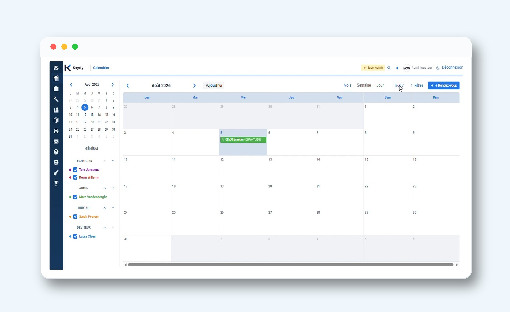
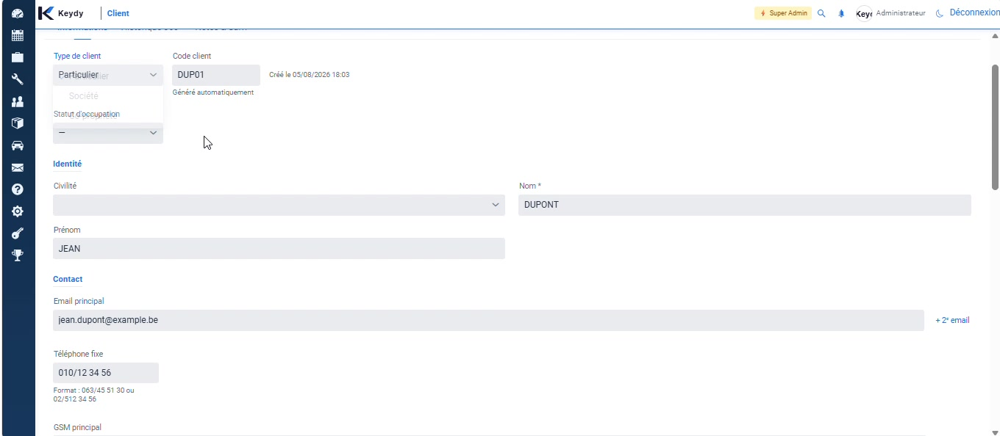
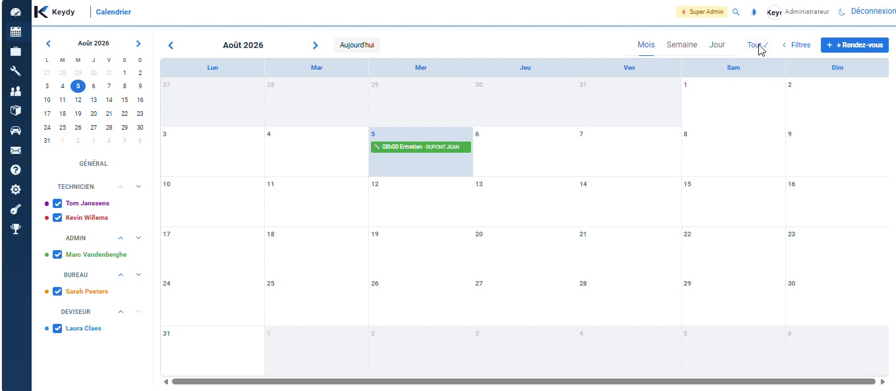
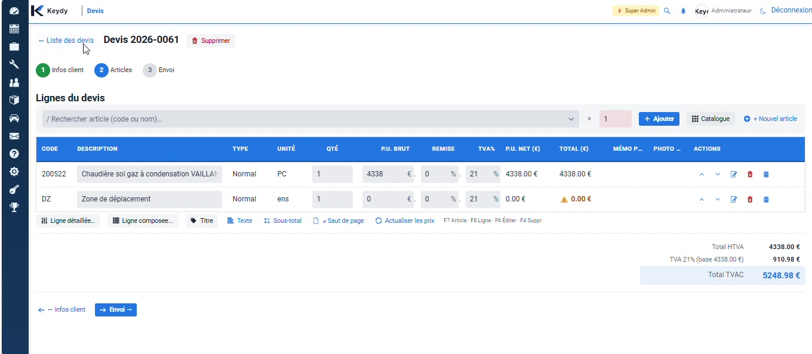
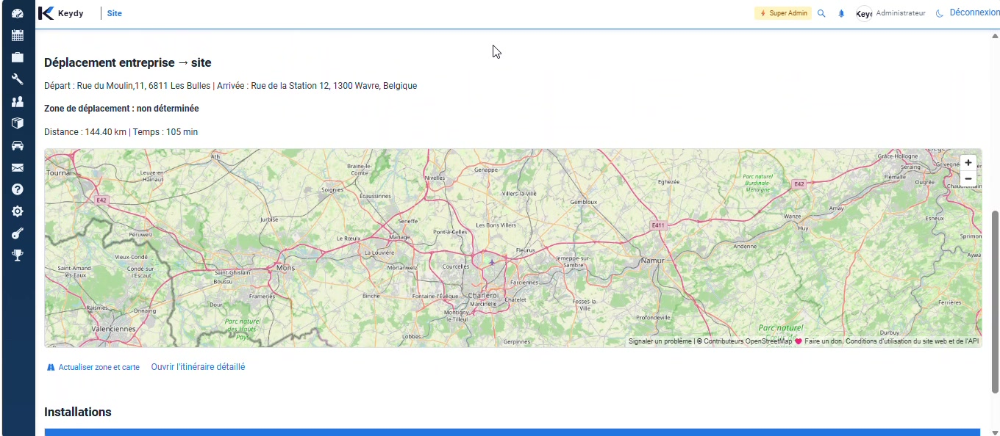
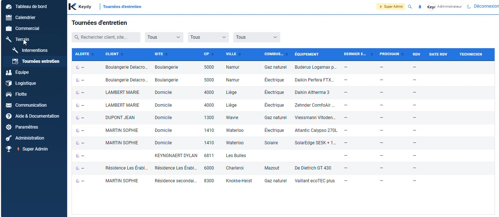
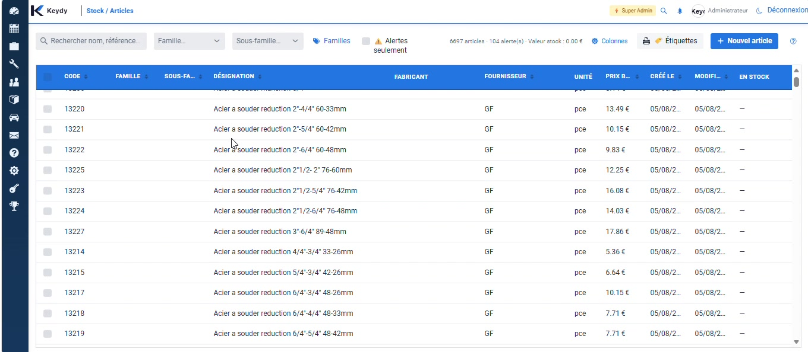
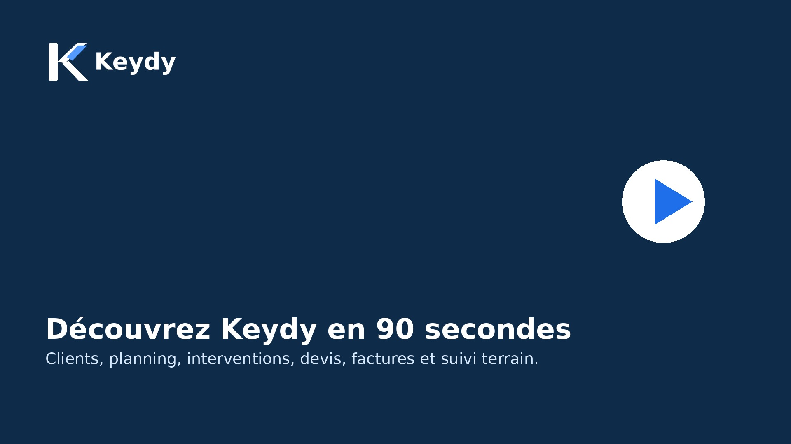

Moins d'administratif.
Plus de maîtrise.
Keydy centralise vos clients, sites, installations, rendez-vous, techniciens, devis, factures, articles et échanges dans une solution conçue pour le quotidien des entreprises techniques.

Tout ce qu'il faut pour suivre une intervention de bout en bout
Keydy évite les doubles encodages et les informations dispersées entre le papier, les messages, les agendas et les fichiers Excel.
Clients et installations
Retrouvez les coordonnées, sites, équipements, historiques et documents au même endroit.

Planning et interventions
Planifiez les rendez-vous, attribuez les techniciens et gardez une vue d'ensemble de la charge.

Devis et facturation
Préparez vos offres, suivez leur état et transformez le travail réalisé en documents commerciaux.

Sites et déplacements
Visualisez les lieux d'intervention, les installations présentes et les informations utiles au déplacement.

Tournées d'entretien
Préparez les campagnes d'entretien, filtrez les clients et organisez les passages plus efficacement.

Catalogue et articles
Centralisez vos références, prix et informations utiles pour accélérer les devis et les interventions.

Du premier appel au suivi final
Client
Créez ou retrouvez rapidement le dossier du client et ses sites.
Planification
Fixez le rendez-vous et attribuez le bon technicien.
Terrain
Le technicien consulte les informations et complète son intervention.
Documents
Rapports, photos, attestations et données restent liés au dossier.
Facturation
Le bureau récupère une information propre pour finaliser le suivi.
Keydy est déjà utilisé par une entreprise de chauffage active en Belgique
Le produit est développé au contact d'une activité réelle de chauffage et d'interventions techniques, avec les contraintes quotidiennes du bureau et du terrain.

Découvrez l'essentiel en 90 secondes
Une vue rapide des principaux modules avant une démonstration personnalisée.
- Tableau de bord et planning
- Clients, sites et installations
- Devis, factures et tournées
- Catalogue et communication
Voyez Keydy avec vos propres cas d'usage
Une démonstration ciblée vaut mieux qu'une longue liste de fonctions.